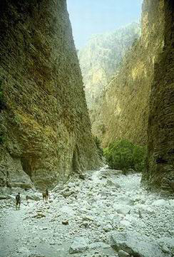
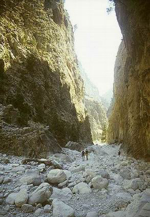
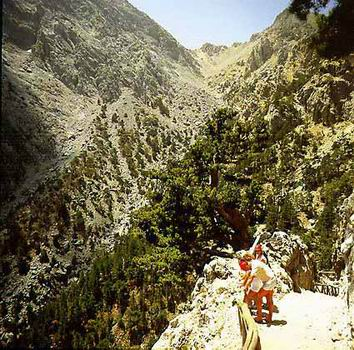

| Από τη νότια πλευρά του οροπεδίου του Ομαλού στη θέση ξυλόκαστρο σε υψόμετρο 1.200 μέτρων, στα Λευκά Ορη στο νομό Χανίων της δυτικής Κρήτης, ξεκινά το φαράγγι της Σαμαριάς. Η άλλη άκρη του φαραγγιού, που απέχει 16 περίπου χιλιόμετρα, καταλήγει στις νότιες ακτές της Κρήτης στο Λυβικό πέλαγος. Το φαράγγι της Σαμαριάς, σχηματισμός μοναδικός στη Μεσόγειο, μαζί με τις γύρω πλαγιές και άλλα μικρότερα, αποτελεί τον Εθνικό Δρυμό Λευκών Ορέων ή Σαμαριάς. Η μορφολογία της περιοχής ποικίλει. Περιλαμβάνει πολλές κορυφές με υψόμετρο πάνω από 2.000 μέτρα (κορυφή Βολακιάς 2.116 μ) και κατεβαίνει μέχρι τη θάλασσα.. Βαθιές και επιβλητικές χαράδρες, γραφικά ρέματα, πηγές με πεντακάθαρο νερό και πυκνά δάση από κυπαρίσι (Cupressus sempervirens), τραχεία πεύκη (Pinus brutia) και πουρνάρι (Quercus coccifera), συνθέτουν ένα υπέροχο και μοναδικό τοπίο. Οι εντυπωσιακοί γεωλογικοί σχηματισμοί, τα πολλά ανεξερεύνητα στοιχεία μαζί με μια ιδιαίτερα πλούσια ποικιλία χλωρίδας και πανίδας συνθέτουν μια μοναδική σε αγριότητα, επιβλητικότητα, θεαματικότητα και μεγαλοπρέπεια εικόνα. |  |
|---|---|
|  | Πάνω από 450 είδη του φυτικού βασιλείου βρίσκονται στην περιοχή του Εθνικού Δρυμού. Εβδομήντα από αυτά είναι ενδημικά είδη και υποείδη της Κρήτης, όπως και ο δίκταμος (Amaracus dictamnus), ο έβενος (Ebenus cretica), η αμπελιτσιά (Zelkova abelicea), και η τραχεία πεύκη η Κρητική (Pinus brutia cretica). Το βούπλευρο (bupleurum kakiskalae) και η μυοσοτίς (Myosotis refracta refracta) είναι από τα φυτά που ζουν αποκλειστικά στο φαράγγι. Η ονοβρυχίς (Onobrychis sphaciotica), το ελίχρυσο (Helichrysum heldreichii) και το κεφαλάνθηρο (Cephalanthera cucculata), είναι από τα πολύ σπάνια που μάλιστα κινδυνεύουν να εξαφανιστούν. Η Σαμαριά έχει μια σημαντική σε ποικιλία και αριθμό πανίδα, με διάφορα είδη και υποείδη ενδημικά ή σχεδόν ενδημικά της Κρήτης. Είναι το μόνο μέρος στην Ευρώπη όπου ζει σε άγρια κατάσταση το ονομαστό Κρητικό αγριοκάτσικο ή Κρι-κρι (Capra aegagrus cretica), καθώς επίσης το κρητικό υποείδος ασβού ή άρκαλος (Meles meles arcalus), το κρητικό κουνάβι ή ζουρίδα (Martes foina bunites), η κρητική νυφίτσα ή καλογιαννού (Mustela nivalis galinthias), κ.α. Ενα μικρόσωμο είδος ποντικιού, ο Κρητικός αγκαθοπόντικας (Acomys minous), δεν έχει εντοπισθεί σε κανένα άλλο μέρος της Ελλάδας. Το ίδιο το Φαράγγι και οι γύρω δασωμένες εκτάσεις, είναι καταφύγιο πολλών ειδών της πτηνοπανίδας, ανάμεσα στα οποία, τα πιο γνωστά, είναι το όρνιο (Gyps fulvus), ο γυπαετός (Gypaetus barbatus), ο σπιζαετός (Hieraetus fasciatus), ο χρυσαετός (Aquila chrysaetos), καθώς και τα δύο Ευρωπαικά είδη κόρακα - κοκκινοκαλιακούδα και κιτρινοκαλιακούδα (Pyrrhocorax pyrrochcorac και P. graculus) κ.λ.π. |
|
Η εικόνα του δρυμού ολοκληρώνεται με την παρουσία του ανθρώπου, που εδώ και αιώνες, από τα νεολιθικά ακόμα χρόνια, έδρασε στο περιβάλλον του, αλλά και διαμορφώθηκε από αυτό. Οι προιστορικοί οικισμοί , η πόλη Καινώ, η πόλη Τάρα, το μαντείο και το ιερό του Απόλλωνα και σαν απαραίτητο συμπλήρωμα, οι παλαιοχριστιανικοί τάφοι, οι βυζαντινοί ναίσκοι, το παλαιό χωριό της Σαμαριάς, στο κέντρο του φαραγγιού και τα βενετσιάνικα κάστρα,
είναι λιγοστά από τα ίχνη του ανθρώπου που κινήθηκε στην περιοχή.
Στη βόρεια είσοδο του Δρυμού λειτουργεί, με ευθύνη του φορέα διοίκησης και διαχείρισης του δρυμού (Δ/νση Δασών Χανίων), Κέντρο Πληροφόρησης των Επισκεπτών, Μουσείο Φυσικής Ιστορίας. Δρόμοι μέσα στο Δρυμό δεν υπάρχουν. Η πρόσβαση στη βόρεια είσοδο γίνεται από αμαξητή οδό, που συνδέει την περιοχή με την πόλη των Χανίων. Η κάθοδος του φαραγγιού, μέχρι την νότια είσοδο του δρυμού στον παραλιακό οικισμό της Αγίας Ρούμελης,
γίνεται πεζή ακολουθόντας το κεντρικό μονοπάτι μήκους 16 χιλιομέτρων, που απαιτεί πεζοπορία από 5 μέχρι 6 ώρες. Από την Αγία Ρούμελη ο επισκέπτης μεταβαίνει ακτοπλοικώς στη χώρα των Σφακίων όπου παίρνει Λεωφορείο για τα Χανιά. (Πληροφορίες: Δ/νση Δασών - Χανιά , τηλέφωνο 0821 - 92287). |
 |